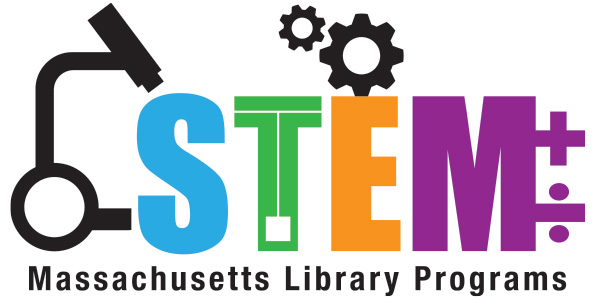

STRANDS
TVL
Technical-Vocational-Livelihood Strand Technical-Vocational-Livelihood Strand TVL Strand is designed to develop students' skills that is useful for livelihood and technical projects. It provides a curriculum that is a combination of Core Courses and specialized hands-on courses that meets the competency-based assessment of TESDA.
HUMSS
Humanities and Social Sciences
DESCRIPTION. The Humanities and Social Sciences (HUMSS) strands equip students with a wide range of discipline with the use of their experiences and skills into the investigation and inquiry of human situations by studying its behavior and social changes using empirical, analytical, and critical method techniques.
ABM

Accountancy, Business and Management The Accountancy, Business and Management (ABM) strand would focus on the basic concepts of financial management, business management, corporate operations, and all things that are accounted for.
STEM

STEM stands for science, technology, engineering and mathematics and refers to any subjects that fall under these four disciplines.
GAS
General Academic Strand General Academic Strand (GAS) General Academic Strand caters students who are not yet sure of what course or degree they want to take in college. This strand was designed so that indecisive learners can proceed with any college program.